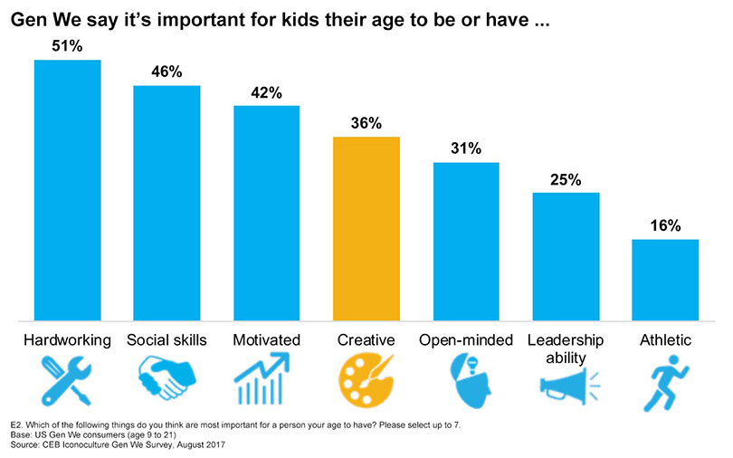

Do Not Stifle
CREATIVITY
Social Justice
A study was made on how creativity affects evaluating and modeling skills. Subjects were put into one of three situations; these either had no example, a standard example, or a creative example. People with the creative exaples had more informative evaluations compared to the other groups. They also did better creativly. The people who did the worst were the people with a controlling, standard model. "Intrinsic motivation was not found to mediate the relationship between evaluation and creativity, and possible explanations for this result are discussed."
People were asked the different things they could do with an egg, and people had creative answers. Every task can involve creativity; anything can be a canvas to show off your creativity; creativity is all about how you went about how you do something, not the end product.

I am Adiba Rana. My school email is adiba_rana@student.davincischools.org